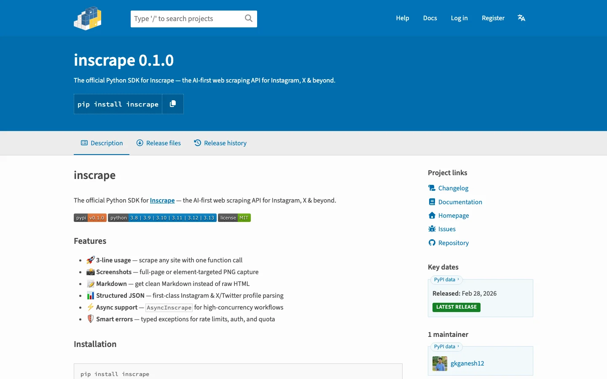

[ Case studies ]
Proof, in production.
What the problem was, what we built and what it does now. Told plainly.
[ EdTech · AI Product Engineering ]
Building a Dual-Engine AI Assessment Platform
HeuriSight Education

The problem
HeuriSight needed an AI system that could do something no existing tool handles well: analyse student work, extract the cognitive decision-making patterns embedded in their responses, and map those patterns to educational competencies. This required combining document understanding (RAG) with heuristic reasoning (HAG) in a novel dual-engine architecture. The system needed to process diverse assessment formats, build knowledge graphs of student cognitive patterns, and present actionable insights to facilitators — all while maintaining the accuracy required for educational assessment.
What we built
The dual-engine architecture allows HeuriSight to do what neither RAG nor traditional rule-based systems can do alone: understand the content of student work AND extract the cognitive patterns that reveal how students think and make decisions. The triple-store data coordination ensures each type of data is stored in the right system — vectors for similarity, graphs for relationships, objects for documents — while presenting a unified view to facilitators.
- Architecture DesignWe designed a dual-engine architecture combining Retrieval-Augmented Generation for document understanding with Heuristics-Augmented Generation for cognitive pattern extraction. A triple-store data layer was planned — Pinecone for vector similarity search, Neo4j for relationship graphs and S3 for document storage — coordinated through a Redis caching layer.
- Core Engine DevelopmentBuilt the RAG engine for processing assessment documents and the HAG engine for applying a 10-category cognitive classification framework. The Goal-Precondition-Confidence framework was implemented to evaluate the strength of heuristic-to-competency translations. Both engines feed into a unified knowledge graph in Neo4j.
- Dashboard & AnalyticsDeveloped a facilitator dashboard with cohort management, assessment processing workflows, competency extraction views and analytics. 3D visualisation using Three.js and React Force Graph for exploring knowledge graphs. At-risk student identification and learning pathway derivation built into the analytics layer.
[ Health & Fitness · MVP & Rapid Prototyping ]
Shipping a Modern Fitness Platform in 4 Weeks
RD Fitness
The problem
RD Fitness is a full-service gym that needed more than a brochure site — they needed a digital platform that drives membership sign-ups, enables class browsing and booking, and establishes a premium brand presence in a competitive market. The budget was tight, the timeline was aggressive (under 5 weeks) and the design needed to feel high-end without a design agency budget. Mobile experience was critical since most of their audience discovers them on phones.
What we built
A complete digital platform that looks like it was built by a large agency but was designed, developed and deployed by our studio in under four weeks. The membership conversion flow is designed to minimise friction — from landing page to sign-up in three steps. The class booking system is built for real-time availability. The entire site is mobile-first with sub-2-second load times.
- Brand & Design SystemCreated a complete design system from scratch — dark charcoal base with electric orange and neon lime accents. Typography pairing (Bebas Neue, Montserrat, Inter) that conveys energy and professionalism. Component library built in Tailwind CSS for rapid page assembly.
- Core Platform BuildBuilt the full platform on Next.js with TypeScript — membership registration flow, class browsing and booking system, brand storytelling sections, testimonials and contact. Framer Motion animations for engagement without sacrificing performance.
- Optimisation & LaunchPerformance optimisation for mobile-first experience. Image optimisation, code splitting, responsive testing across devices. Lighthouse score tuned above 90. Deployed to production on Vercel with CI/CD.
[ Developer Tools · AI Product Engineering ]
Publishing an AI-Powered Developer CLI on npm
Internal Product
$ npm i -g @gkganesh12/codecraft-cli $ codecraft init › /plan scope the change › /code write inside the guard › /verify check it against the rules
The problem
AI coding assistants treat every codebase the same — they don't understand architectural constraints, project conventions or the different perspectives that a PM, architect and QA engineer bring to the same code. We wanted to build a CLI tool that brings role-based AI reasoning to development workflows, with guardrails that prevent AI from going off-scope.
What we built
CodeCraft is the AI coding assistant that understands your project's rules, not just your code. The role-based persona system means you get different perspectives on the same problem — a PM thinks about user stories, an architect thinks about system design, QA thinks about edge cases. The scope guard and rule engine prevent the AI from making well-intentioned but architecture-breaking changes.
- CLI ArchitectureDesigned a Commander.js-based CLI with an interactive REPL that maintains persistent context across sessions. Plugin architecture for slash commands. Configuration system via ~/.codecraft/config.json for per-project rules and constraints.
- Role System & CommandsBuilt 6 role-based personas (PM, Architect, Backend Dev, Frontend Dev, QA Lead, Full-Stack) that change how the AI reasons about code. Implemented 9+ slash commands: /plan, /code, /verify, /doctor, /feature, /adr, /test, /review, /explain. Each command uses the active persona to shape its output.
- Guardrails & PublishingImplemented Scope Guard (prevents modifications to files outside the defined scope) and a rule engine for architectural constraints (e.g., 'no direct database calls from route handlers'). Published on npm as a globally installable CLI with binary entry point.
[ Data Infrastructure · AI Product Engineering ]
Launching an AI Scraping SDK on PyPI
Internal Product

The problem
Web scraping remains one of the most common data engineering tasks, yet the developer experience is still poor — CSS selectors break, browser automation is slow and heavy, and output is unstructured. We wanted to build a scraping SDK that makes extraction as simple as an API call, with AI powering the extraction logic so it works reliably across sites without site-specific configuration.
What we built
Inscrape turns web scraping from a fragile, maintenance-heavy process into a simple API call. The AI-powered extraction layer handles the complexity — developers don't write selectors, don't manage browsers and don't maintain site-specific code. They get structured data back in the format they need.
- API & SDK DesignDesigned an API-first architecture where the AI-powered extraction runs server-side, and the Python SDK is a thin, well-typed client. Three-line usage pattern: init client, call scrape, get structured data. Typed exceptions for every failure mode (auth, rate limits, quota).
- Extractor DevelopmentBuilt specialised extractors for social media profiles (Instagram, X/Twitter) that return structured JSON with follower counts, bios, engagement metrics and post data. General URL extractor returns structured content, Markdown and screenshot options.
- Async & PublishingAdded full async support via AsyncInscrape for high-throughput pipelines. Comprehensive test suite with pytest and pytest-asyncio. Linting with Ruff. Published on PyPI with Hatchling build system and full documentation.